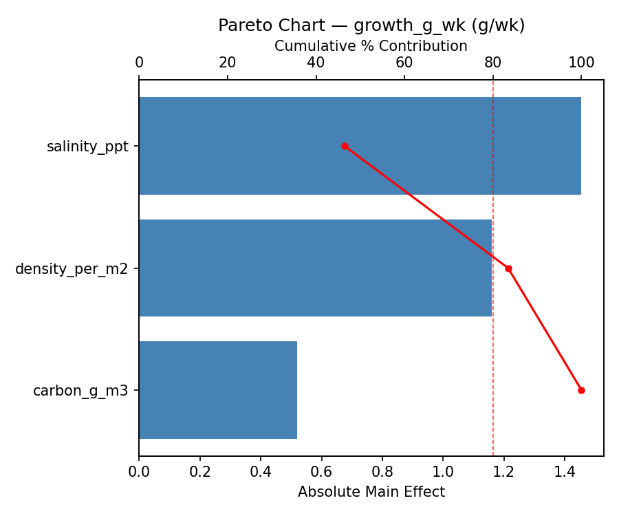
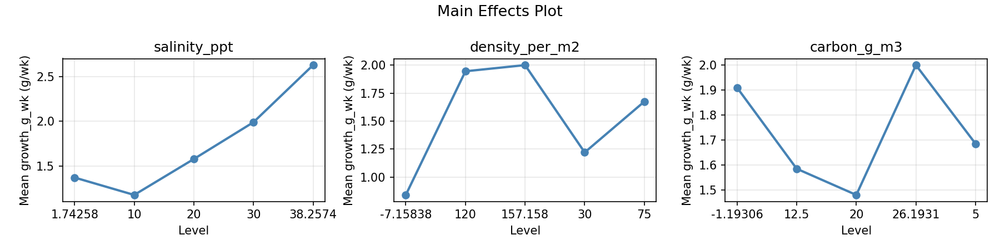
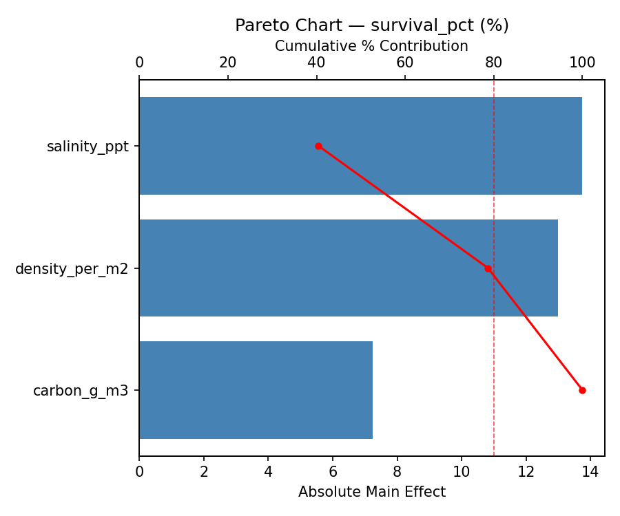
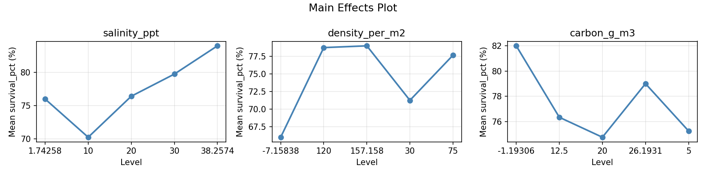
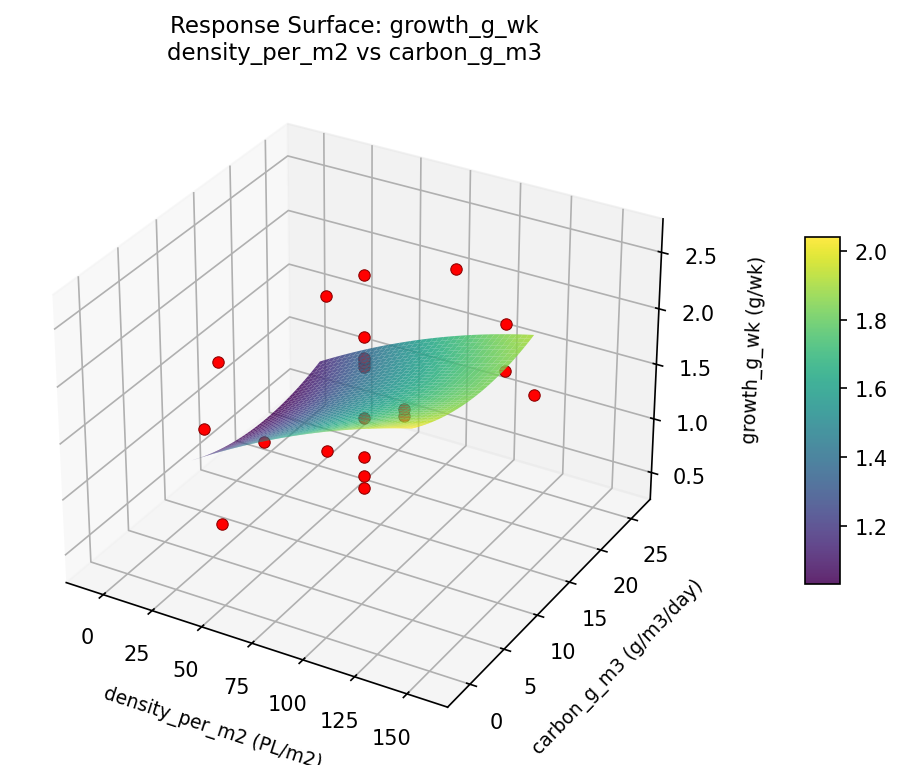
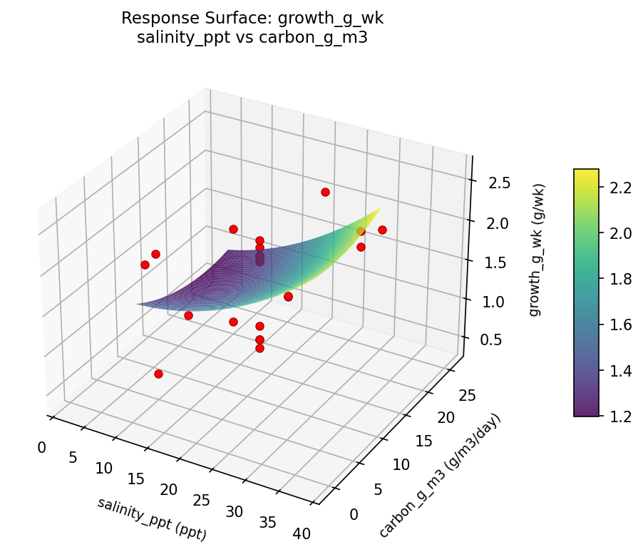
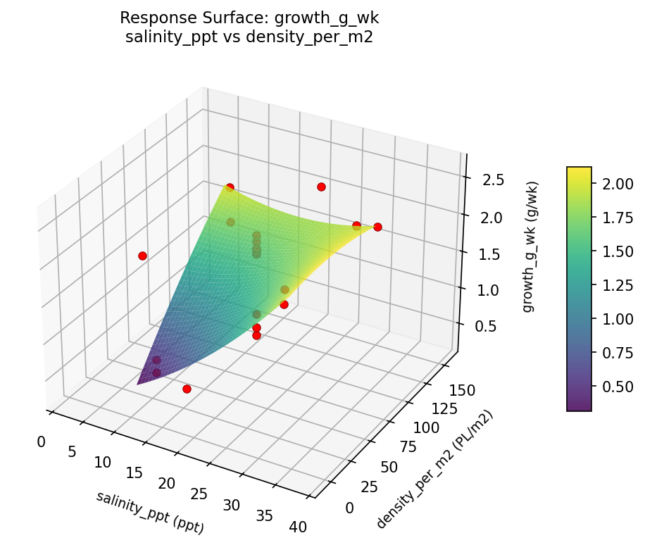
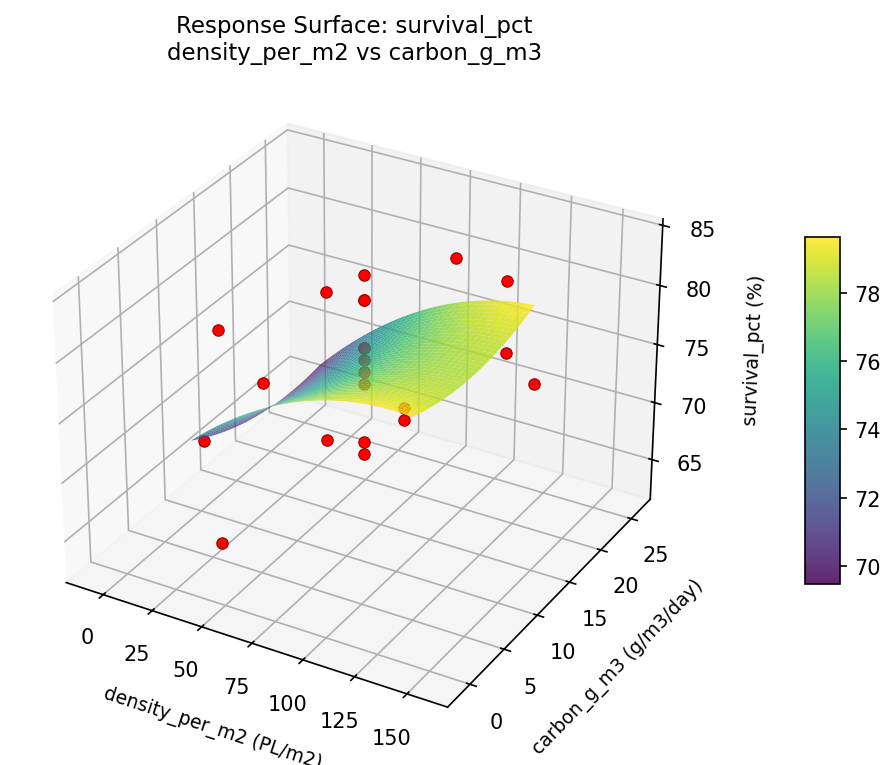
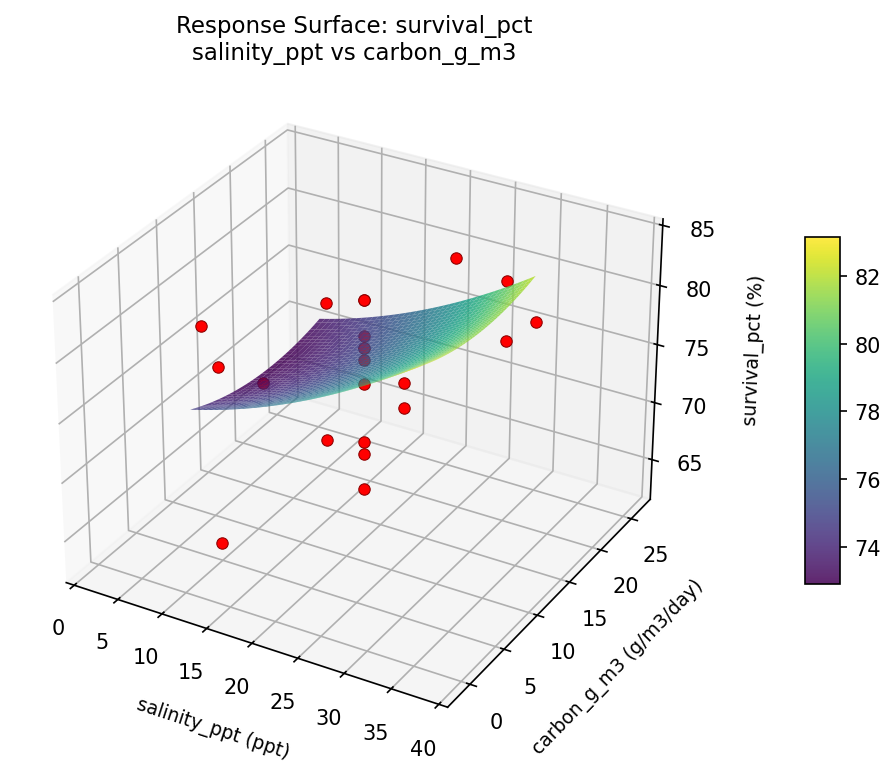
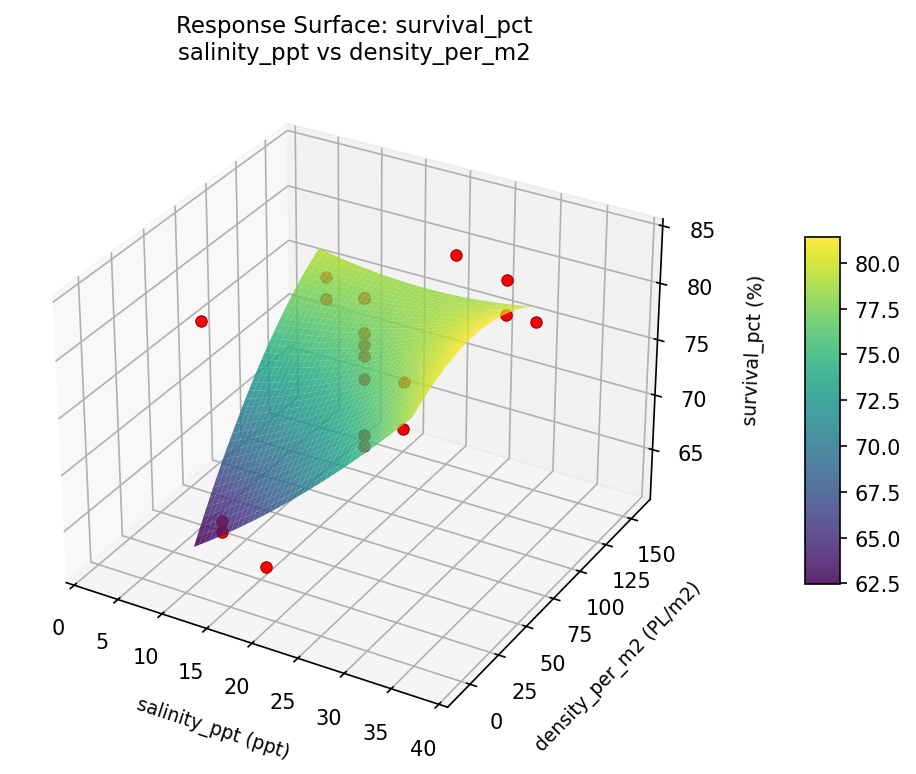

Summary
This experiment investigates shrimp pond management. Central composite design to maximize growth rate and survival by tuning water salinity, stocking density, and biofloc carbon source.
The design varies 3 factors: salinity ppt (ppt), ranging from 10 to 30, density per m2 (PL/m2), ranging from 30 to 120, and carbon g m3 (g/m3/day), ranging from 5 to 20. The goal is to optimize 2 responses: growth g wk (g/wk) (maximize) and survival pct (%) (maximize). Fixed conditions held constant across all runs include species = L_vannamei, pond = 0.5ha.
A Central Composite Design (CCD) was selected to fit a full quadratic response surface model, including curvature and interaction effects. With 3 factors this produces 22 runs including center points and axial (star) points that extend beyond the factorial range.
Quadratic response surface models were fitted to capture potential curvature and factor interactions. The RSM contour plots below visualize how pairs of factors jointly affect each response.
Key Findings
For growth g wk, the most influential factors were salinity ppt (46.4%), density per m2 (37.0%), carbon g m3 (16.6%). The best observed value was 2.63 (at salinity ppt = 20, density per m2 = 75, carbon g m3 = 12.5).
For survival pct, the most influential factors were salinity ppt (40.4%), density per m2 (38.2%), carbon g m3 (21.3%). The best observed value was 84.0 (at salinity ppt = 20, density per m2 = 75, carbon g m3 = 12.5).
Recommended Next Steps
- Run confirmation experiments at the predicted optimal settings to validate the model.
- Consider whether any fixed factors should be varied in a future study.
Experimental Setup
Factors
| Factor | Low | High | Unit |
|---|
salinity_ppt | 10 | 30 | ppt |
density_per_m2 | 30 | 120 | PL/m2 |
carbon_g_m3 | 5 | 20 | g/m3/day |
Fixed: species = L_vannamei, pond = 0.5ha
Responses
| Response | Direction | Unit |
|---|
growth_g_wk | ↑ maximize | g/wk |
survival_pct | ↑ maximize | % |
Configuration
{
"metadata": {
"name": "Shrimp Pond Management",
"description": "Central composite design to maximize growth rate and survival by tuning water salinity, stocking density, and biofloc carbon source"
},
"factors": [
{
"name": "salinity_ppt",
"levels": [
"10",
"30"
],
"type": "continuous",
"unit": "ppt"
},
{
"name": "density_per_m2",
"levels": [
"30",
"120"
],
"type": "continuous",
"unit": "PL/m2"
},
{
"name": "carbon_g_m3",
"levels": [
"5",
"20"
],
"type": "continuous",
"unit": "g/m3/day"
}
],
"fixed_factors": {
"species": "L_vannamei",
"pond": "0.5ha"
},
"responses": [
{
"name": "growth_g_wk",
"optimize": "maximize",
"unit": "g/wk"
},
{
"name": "survival_pct",
"optimize": "maximize",
"unit": "%"
}
],
"settings": {
"operation": "central_composite",
"test_script": "use_cases/299_aquaculture_shrimp/sim.sh"
}
}
Experimental Matrix
The Central Composite Design produces 22 runs. Each row is one experiment with specific factor settings.
| Run | salinity_ppt | density_per_m2 | carbon_g_m3 |
|---|
| 1 | 20 | 75 | 12.5 |
| 2 | 30 | 30 | 20 |
| 3 | 10 | 120 | 5 |
| 4 | 20 | 157.158 | 12.5 |
| 5 | 20 | 75 | 12.5 |
| 6 | 1.74258 | 75 | 12.5 |
| 7 | 20 | 75 | -1.19306 |
| 8 | 20 | 75 | 12.5 |
| 9 | 30 | 120 | 5 |
| 10 | 38.2574 | 75 | 12.5 |
| 11 | 20 | 75 | 12.5 |
| 12 | 20 | -7.15838 | 12.5 |
| 13 | 20 | 75 | 12.5 |
| 14 | 10 | 30 | 20 |
| 15 | 20 | 75 | 12.5 |
| 16 | 30 | 30 | 5 |
| 17 | 20 | 75 | 26.1931 |
| 18 | 30 | 120 | 20 |
| 19 | 20 | 75 | 12.5 |
| 20 | 10 | 30 | 5 |
| 21 | 10 | 120 | 20 |
| 22 | 20 | 75 | 12.5 |
Step-by-Step Workflow
1
Preview the design
$ python doe.py info --config use_cases/299_aquaculture_shrimp/config.json
2
Generate the runner script
$ python doe.py generate --config use_cases/299_aquaculture_shrimp/config.json \
--output use_cases/299_aquaculture_shrimp/results/run.sh --seed 42
3
Execute the experiments
$ bash use_cases/299_aquaculture_shrimp/results/run.sh
4
Analyze results
$ python doe.py analyze --config use_cases/299_aquaculture_shrimp/config.json
5
Get optimization recommendations
$ python doe.py optimize --config use_cases/299_aquaculture_shrimp/config.json
6
Generate the HTML report
$ python doe.py report --config use_cases/299_aquaculture_shrimp/config.json \
--output use_cases/299_aquaculture_shrimp/results/report.html
Real-World Experiment Workflow
ℹ
Physical Farm & Livestock Experiment? Use the Manual Workflow
Livestock experiments involve real animals, feed, facilities, and biological responses that can't be simulated. The simulation script above is for demonstration. For your real experiments, use record, status, and export-worksheet.
$ python doe.py export-worksheet --config use_cases/299_aquaculture_shrimp/config.json \
--format csv --output worksheet.csv
$ python doe.py status --config use_cases/299_aquaculture_shrimp/config.json
$ python doe.py record --config use_cases/299_aquaculture_shrimp/config.json --run 1
$ python doe.py analyze --config use_cases/299_aquaculture_shrimp/config.json --partial
$ python doe.py analyze --config use_cases/299_aquaculture_shrimp/config.json
$ python doe.py optimize --config use_cases/299_aquaculture_shrimp/config.json
$ python doe.py report --config use_cases/299_aquaculture_shrimp/config.json \
--output report.html
✔
Works Without a Test Script
The analysis pipeline doesn't care how results were produced. Record your measurements with record, and the full analysis, optimization, and reporting pipeline works identically. Use --partial to get early insights before all runs are complete.
Features Exercised
| Feature | Value |
|---|
| Design type | central_composite |
| Factor types | continuous (all 3) |
| Arg style | double-dash |
| Responses | 2 (growth_g_wk ↑, survival_pct ↑) |
| Total runs | 22 |
Analysis Results
Generated from actual experiment runs using the DOE Helper Tool.
Response: growth_g_wk
Top factors: salinity_ppt (46.4%), density_per_m2 (37.0%), carbon_g_m3 (16.6%).
Pareto Chart

Main Effects Plot

Response: survival_pct
Top factors: salinity_ppt (40.4%), density_per_m2 (38.2%), carbon_g_m3 (21.3%).
Pareto Chart

Main Effects Plot

Response Surface Plots
3D surfaces fitted with quadratic RSM. Red dots are observed data points.
growth g wk density per m2 vs carbon g m3

growth g wk salinity ppt vs carbon g m3

growth g wk salinity ppt vs density per m2

survival pct density per m2 vs carbon g m3

survival pct salinity ppt vs carbon g m3

survival pct salinity ppt vs density per m2

Full Analysis Output
RSM surface: rsm_growth_g_wk_salinity_ppt_vs_density_per_m2.png
RSM surface: rsm_growth_g_wk_salinity_ppt_vs_carbon_g_m3.png
RSM surface: rsm_growth_g_wk_density_per_m2_vs_carbon_g_m3.png
RSM surface: rsm_survival_pct_salinity_ppt_vs_density_per_m2.png
RSM surface: rsm_survival_pct_salinity_ppt_vs_carbon_g_m3.png
RSM surface: rsm_survival_pct_density_per_m2_vs_carbon_g_m3.png
=== Main Effects: growth_g_wk ===
Factor Effect Std Error % Contribution
--------------------------------------------------------------
salinity_ppt 1.4550 0.1287 46.4%
density_per_m2 1.1600 0.1287 37.0%
carbon_g_m3 0.5200 0.1287 16.6%
=== Summary Statistics: growth_g_wk ===
salinity_ppt:
Level N Mean Std Min Max
------------------------------------------------------------
1.74258 1 1.3700 0.0000 1.3700 1.3700
10 4 1.1750 0.8113 0.4100 2.0900
20 12 1.5775 0.5398 0.7300 2.0900
30 4 1.9900 0.0935 1.8500 2.0400
38.2574 1 2.6300 0.0000 2.6300 2.6300
density_per_m2:
Level N Mean Std Min Max
------------------------------------------------------------
-7.15838 1 0.8400 0.0000 0.8400 0.8400
120 4 1.9450 0.2183 1.6200 2.0900
157.158 1 2.0000 0.0000 2.0000 2.0000
30 4 1.2200 0.8436 0.4100 2.0400
75 12 1.6742 0.5658 0.7300 2.6300
carbon_g_m3:
Level N Mean Std Min Max
------------------------------------------------------------
-1.19306 1 1.9100 0.0000 1.9100 1.9100
12.5 12 1.5850 0.6080 0.7300 2.6300
20 4 1.4800 0.7337 0.4100 2.0400
26.1931 1 2.0000 0.0000 2.0000 2.0000
5 4 1.6850 0.7371 0.5800 2.0900
=== Main Effects: survival_pct ===
Factor Effect Std Error % Contribution
--------------------------------------------------------------
salinity_ppt 13.7500 1.2926 40.4%
density_per_m2 13.0000 1.2926 38.2%
carbon_g_m3 7.2500 1.2926 21.3%
=== Summary Statistics: survival_pct ===
salinity_ppt:
Level N Mean Std Min Max
------------------------------------------------------------
1.74258 1 76.0000 0.0000 76.0000 76.0000
10 4 70.2500 7.8475 63.0000 78.0000
20 12 76.4167 5.3845 66.0000 82.0000
30 4 79.7500 2.2174 77.0000 82.0000
38.2574 1 84.0000 0.0000 84.0000 84.0000
density_per_m2:
Level N Mean Std Min Max
------------------------------------------------------------
-7.15838 1 66.0000 0.0000 66.0000 66.0000
120 4 78.7500 2.5000 76.0000 82.0000
157.158 1 79.0000 0.0000 79.0000 79.0000
30 4 71.2500 9.1059 63.0000 81.0000
75 12 77.6667 4.6969 69.0000 84.0000
carbon_g_m3:
Level N Mean Std Min Max
------------------------------------------------------------
-1.19306 1 82.0000 0.0000 82.0000 82.0000
12.5 12 76.3333 5.5487 66.0000 84.0000
20 4 74.7500 7.6322 64.0000 82.0000
26.1931 1 79.0000 0.0000 79.0000 79.0000
5 4 75.2500 8.2614 63.0000 81.0000
Pareto chart (growth_g_wk): use_cases/299_aquaculture_shrimp/results/analysis/pareto_growth_g_wk.png
Pareto chart (survival_pct): use_cases/299_aquaculture_shrimp/results/analysis/pareto_survival_pct.png
Main effects (growth_g_wk): use_cases/299_aquaculture_shrimp/results/analysis/main_effects_growth_g_wk.png
Main effects (survival_pct): use_cases/299_aquaculture_shrimp/results/analysis/main_effects_survival_pct.png
Optimization Recommendations
=== Optimization: growth_g_wk ===
Direction: maximize
Best observed run: #2
salinity_ppt = 20
density_per_m2 = 75
carbon_g_m3 = 12.5
Value: 2.63
RSM Model (linear, R² = 0.0037, Adj R² = -0.1624):
Coefficients:
intercept +1.6177
salinity_ppt +0.0002
density_per_m2 -0.0359
carbon_g_m3 +0.0252
RSM Model (quadratic, R² = 0.1860, Adj R² = -0.4244):
Coefficients:
intercept +1.6598
salinity_ppt +0.0002
density_per_m2 -0.0359
carbon_g_m3 +0.0252
salinity_ppt*density_per_m2 +0.0475
salinity_ppt*carbon_g_m3 +0.2950
density_per_m2*carbon_g_m3 +0.0000
salinity_ppt^2 -0.1236
density_per_m2^2 +0.1134
carbon_g_m3^2 -0.0531
Curvature analysis:
salinity_ppt coef=-0.1236 concave (has a maximum)
density_per_m2 coef=+0.1134 convex (has a minimum)
carbon_g_m3 coef=-0.0531 negligible curvature
Predicted optimum (from linear model):
salinity_ppt = 20
density_per_m2 = -7.15838
carbon_g_m3 = 12.5
Predicted value: 1.6833
Model quality: Weak fit — consider adding center points or using a different design.
Factor importance:
1. salinity_ppt (effect: 1.6, contribution: 47.7%)
2. carbon_g_m3 (effect: 1.2, contribution: 36.0%)
3. density_per_m2 (effect: 0.5, contribution: 16.3%)
=== Optimization: survival_pct ===
Direction: maximize
Best observed run: #2
salinity_ppt = 20
density_per_m2 = 75
carbon_g_m3 = 12.5
Value: 84.0
RSM Model (linear, R² = 0.0160, Adj R² = -0.1480):
Coefficients:
intercept +76.2273
salinity_ppt +0.3672
density_per_m2 -0.6224
carbon_g_m3 +0.5635
RSM Model (quadratic, R² = 0.2166, Adj R² = -0.3709):
Coefficients:
intercept +77.0168
salinity_ppt +0.3672
density_per_m2 -0.6224
carbon_g_m3 +0.5635
salinity_ppt*density_per_m2 +0.7500
salinity_ppt*carbon_g_m3 +2.7500
density_per_m2*carbon_g_m3 -1.5000
salinity_ppt^2 -1.5947
density_per_m2^2 +0.8053
carbon_g_m3^2 -0.3947
Curvature analysis:
salinity_ppt coef=-1.5947 concave (has a maximum)
density_per_m2 coef=+0.8053 convex (has a minimum)
carbon_g_m3 coef=-0.3947 concave (has a maximum)
Notable interactions:
salinity_ppt*carbon_g_m3 coef=+2.7500 (synergistic)
density_per_m2*carbon_g_m3 coef=-1.5000 (antagonistic)
salinity_ppt*density_per_m2 coef=+0.7500 (synergistic)
Predicted optimum (from linear model):
salinity_ppt = 30
density_per_m2 = 30
carbon_g_m3 = 20
Predicted value: 77.7805
Model quality: Weak fit — consider adding center points or using a different design.
Factor importance:
1. salinity_ppt (effect: 15.0, contribution: 43.9%)
2. carbon_g_m3 (effect: 13.0, contribution: 38.0%)
3. density_per_m2 (effect: 6.2, contribution: 18.0%)